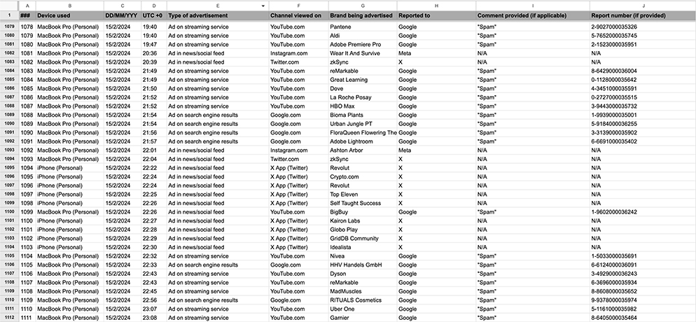

Reporting every online advertisement for a month
August 25, 2024
In January 2024, I decided to make the commitment to report every advertisement I saw online for the month of February. It was a pretty spontaneous decision, made less than 24 hours before the month began, mostly driven by a desire to experience the internet as it existed in an unfiltered way. I had begun noticing that Facebook Messenger was including advertisements in its app, nestled in amongst all your conversations, as if the ad was a message itself. Maybe it’s because I normally avoid advertising as much as possible online by using adblockers, but to advertise amongst my personal conversations felt intrusive, even for an advertisement.
For a while I tried to organize my thoughts into one big coherent article, but then lost interest and eventually decided the only way to stop it from weighing on my mind was just clean it up and call it done. So loose / disorganized thoughts below.
Background
Up until the new year, I hadn’t been using much social media – I only redownloaded Instagram and Twitter (X) on my phone in late December of 2023, so the majority of advertisements I would normally see were blocked out on my desktop browser by an adblocker. Beginning to use social media on my phone again made me again question the online experience in a centralized and monetized internet – what if the best way to engage online is by disengaging and ignoring the majority of what I was being served? Had I been made to trade attentiveness for a passable online experience?
Reporting every advertisement I saw for a month was meant to explore how the establishment of a habit that would negatively impact my online experience could redefine my relationship with the internet. Would I be less inclined to engage? Would a spreadsheet documenting every advertisement I saw and reported adequately chronicle my online journey?
I’ve seen mention of plenty of reports floating around online that attempt to estimate how many advertisements a person sees on any given day. The number I’m most familiar with is around ten thousand, which, as far as I’m aware, includes advertisements outside (billboards, bus stops, etc.) as well as general branded products (the logo on your friend’s shirt or on the packet of tissues you carry with you. etc.) I am, for the purpose of this performance anyways, not counting any of these.
What I am counting is effectively anything created with the explicit intention of being promoting a product on the internet:
Advertisements do not include:
As for where I reported… it depended. Ads on social media platforms like FaceBook were easy to deal with, as these platforms have built in reporting mechanisms. Many ads served by Google can be reported to Google. I would usually report popups, junk email, advertisements on the boards of a hockey game, etc. to either the Federal Trade Commission in the USA or the Competition Bureau in Canada through their web forms.
I generally left no comment (or very little if a comment was required) and would report ads as spam, since ‘spam’ is amorphous enough a term to be realistically and truthfully applied to all matters of advertisements. I mean – to me, these advertisements are spam. I have no interest in lying about these ads and their contents; this isn’t some self-important project bent on ‘taking down’ ads or ‘sticking it’ to advertisers. It is a performance, of sorts.
Art requires trust
While I was doing this project, I was asked by a few friends if I had given consideration to advertisements I might miss – had I considered finding a way to automate it, or use some kind of computer assisted technology to help me identify advertisements online? I think that whether or not this is a good idea is dependant on the terms that one engages with this project on. Trying to position myself on the outside looking in, I can certainly understand the temptation to view this as a data collection exercise. However, I do think that I am clear about the way I wish for this project to be understood – it is a performance art. This is expressed through the very decision to not to find a way to automate, but rather to ensure that every identifying of an ad and the subsequent mouse clicks and keystrokes taken to report it is done entirely by me, manually. In this decision lives my desire to treat this as art about the performance of reporting and the establishment of a ritual around documenting all advertisements I see. Not data collection for the sake of data collection, but a collection of data as the output of a month-long performance. As mentioned above, it is not about ‘taking down’ advertisements. It is not about statistics. It is about my online experience, about a user heeding every call to action in the least desirable way possible.
This distinction makes a world of difference, as far as I’m concerned. Were this truly just data collection as a means to an end, then I really would be expected to establish a more rigorous and thorough methodology. It would make sense to ask how I am sure that the data I return is accurate, because returning accurate data would be the point. With the establishment of this project as performance art, I think this is a lot less true. There may not be a hard line between science and art, and I may not be able to control how people choose to engage with what I’ve performed, but I do truly believe the nature of this project is one that requires trust in a human, rather than skepticism about a methodology. I am not asking anyone who engages with my art to trust my methodology, rather I am asking them to trust me.
Performance art
While this comparison wasn’t in my head at the time of starting this project, it began to feel a bit like a project that existed in a similar way (albeit on a shorter timeline, less demanding, and less physically taxing) to Tehching Hsieh’s durational pieces.
Similarly, thinking back to the process of documenting advertisements, as I type this reflection nearly two months later in April (and return to it again in August, lol), I am reminded of the piece like “Opening and Closing Doors and Drawers”, in which an artist photographs every doorknob they touch throughout the day. Similar to this artwork, my reporting and documenting of advertisements involves the establishment of a performance based around a ritualistic approach to a mundane activity, and performing this ritual only to myself. Reporting and documenting advertisements or cataloguing the doorknobs you’ve touched, the only way an audience can engage with these pieces of art is secondhand, by engaging with the byproduct of the art — by looking at the data generated as a result of such a performance. Such data can come to be understood as either a second piece of art, or the only means by which one can retroactively experience the performance, proof it even happened in the first place.
After February
By the time February came to a close, the habit of reporting advertisements had been so engrained in me that the first few I saw on the first of March I also reported. Actually, I’m quite surprised at how easy it was to establish this performance as a habit, despite how miserable an experience it made engaging in the online world.
In February of 2024 I reported 2056 advertisements. I find this to be a simultaneously large, yet very small number. The act of manually reporting over 2000 advertisements is a lot of effort but the number itself felt small for what I’d expect to see online. I suppose it helped that I worked ~8hrs a day on a company computer, doing a job that didn’t often require me to Google things – most of my online activity during work hours was done within a company intranet with no advertisements (If you consider an intranet to be 'online'. I guess from the perspective of whether a system requires network connectivity to function it is 'online', but from the perspective of public accessibility from any location on the internet it is not 'online'. Either way, it had no ads lol).

Looking through my spreadsheet, an overwhelming majority of the advertisements came from Facebook Messenger, X (Twitter), YouTube, or Instagram. My initial hope that this spreadsheet would track my online activity was dashed right out of the gate. Plenty of sites I frequent (relative to the amount of time I spent online) are smaller blogs or websites from individuals, sites such as posts.cv or are.na that don’t run advertisements, and as a result, this exercise acts less as a cross-section of my online activity, but rather as evidence of the role capital has played in concentrating internet activity, and by proxy advertisements, to a small handful of platforms.
It really did feel like the best way to engage with the internet was to ignore as much as possible – of course, not possible when you’ve dedicated yourself to reporting every advertisement. But one has to ask, what is the consequence of that? Of creating a culture that unintentionally awards the most passive, disengaged individual with the best experience?
In August
Almost all of the above was written in April, based off of bullet point notes I took during February as I reported. Currently it is August and I am only now getting around to putting this online.
In the months since February I’ve very easily slipped back into ignoring ads again. Actually, picking this back up and proofreading the disjointed thoughts I had throughout the month of reporting has made me begin to notice the ads again over the last few days.
I’ve been thinking about how staggering and impressive it would be to return to this and report for a full calendar year. Whether I do it or not is a decision I’ve yet to make, but it is a consideration right now.